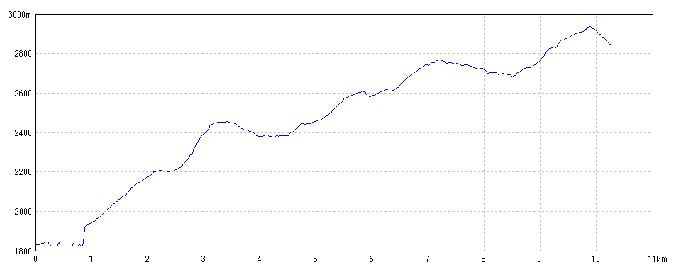
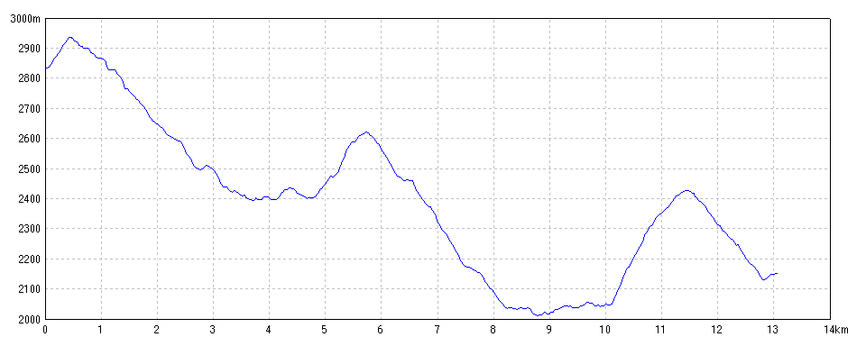
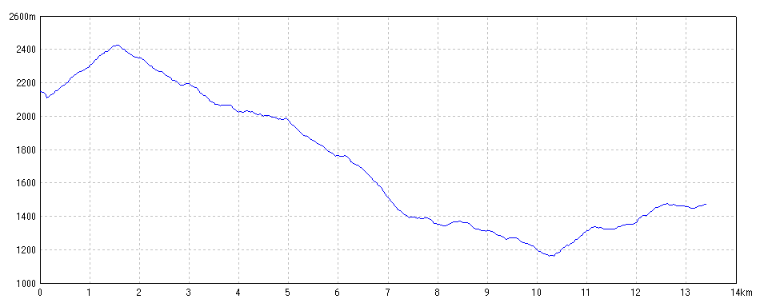

白馬岳・朝日岳2025
2025/07/17自然園駅→白馬山荘
プロフィールマップ

GPSログ解析
| 開始日時 | 2025/07/17 08:55:16 | 終了日時 | 2025/07/17 16:21:08 |
| 水平距離 | 10.29km | 沿面距離 | 11.09km |
| 経過時間 | 7時間25分52秒 | 移動時間 | 5時間14分04秒 |
| 全体平均速度 | 1.49km/h | 移動平均速度 | 1.96km/h |
| 最高速度 | 10.89km/h | 昇降量合計 | 1622m |
| 総上昇量 | 1317m | 総下降量 | 305m |
| 最高高度 | 2938m | 最低高度 | 1822m |
2025/07/18白馬山荘→朝日小屋
プロフィールマップ

GPSログ解析
| 開始日時 | 2025/07/18 06:09:55 | 終了日時 | 2025/07/18 14:57:28 |
| 水平距離 | 13.07km | 沿面距離 | 13.80km |
| 経過時間 | 8時間47分33秒 | 移動時間 | 6時間25分12秒 |
| 全体平均速度 | 1.57km/h | 移動平均速度 | 1.98km/h |
| 最高速度 | 5.50km/h | 昇降量合計 | 2335m |
| 総上昇量 | 826m | 総下降量 | 1509m |
| 最高高度 | 2937m | 最低高度 | 2009m |
2025/07/19朝日小屋→蓮華温泉
プロフィールマップ

GPSログ解析
| 開始日時 | 2025/07/19 04:13:31 | 終了日時 | 2025/07/19 12:58:39 |
| 水平距離 | 13.41km | 沿面距離 | 14.33km |
| 経過時間 | 8時間45分08秒 | 移動時間 | 6時間40分58秒 |
| 全体平均速度 | 1.64km/h | 移動平均速度 | 2.00km/h |
| 最高速度 | 7.73km/h | 昇降量合計 | 2056m |
| 総上昇量 | 693m | 総下降量 | 1363m |
| 最高高度 | 2426m | 最低高度 | 1159m |
写真レポート